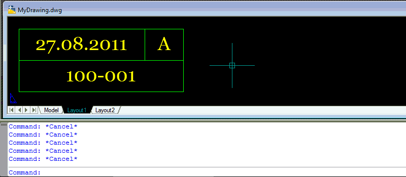

Update Titleblock Attributes
This page is delivered for consistency purposes only, as part of the LeeMac sample module of DynALisp, which shows how DynALisp turns existing AutoLISP programs into a module. The program and its description are the work of Lee Mac, who keeps all the credit for them. The original page, with the latest version, is on Lee Mac's website: https://lee-mac.com/updatetitleblock.html
| Function Syntax | LM-UpdateTitleblock – original syntax: utb (to run manually) (see aliases) |
| Current Version | 1.9 |
| Sample Drawing & CSV File | Sample.zip |
| Compatible with AutoCAD for Mac? | No |
| Compatible with AutoCAD LT? | Yes |
| Original Page | lee-mac.com/updatetitleblock.html |
Program Description
This program offers the ability to automatically update drawing titleblock attributes (or indeed, any attributed blocks) with values sourced from a CSV file (a comma/character-separated-value file which may be opened & edited as an Excel spreadsheet).
The program is designed to run automatically when loaded and, after being correctly configured, may be added to the Startup Suite or acaddoc.lsp to enable drawing titleblocks or other attributed blocks to be automatically updated upon opening a drawing or running a script.
If loaded on startup, when a drawing is opened, a CSV file may be selected or automatically read by the program from a known location, and block attributes are automatically & silently updated using values corresponding to the rows associated with the active drawing in the CSV file.
The CSV file should take the following format:
+------------+-----------+----------+----------+----------+-----+----------+ | DWG | Layout* | Block* | TAG1 | TAG2 | ... | TAGN | +------------+-----------+----------+----------+----------+-----+----------+ | Drawing1 | Layout1 | Block1 | Value1 | Value2 | ... | ValueN | +------------+-----------+----------+----------+----------+-----+----------+ | Drawing1 | Layout2 | Block1 | Value1 | Value2 | ... | ValueN | +------------+-----------+----------+----------+----------+-----+----------+ | Drawing2 | Layout1 | Block2 | Value1 | Value2 | ... | ValueN | +------------+-----------+----------+----------+----------+-----+----------+ | ... | ... | ... | ... | ... | ... | ... | +------------+-----------+----------+----------+----------+-----+----------+
(*The Layout & Block Name columns are optional)
An example of a CSV file demonstrating the above format and an accompanying drawing containing a sample attributed block for use with the program is available to download from the link at the top of this page.
When the program is run: if the drawing name (with or without extension) appears in the first column of the CSV file (not case-sensitive), attributes with tags corresponding to the column headings will be updated with values from the row in which the drawing filename resides.
The Layout column is optional; if present in the CSV file, the flag at the top of the code must be set, else the Layout column will be treated as another attribute tag. If the Layout column is used, titleblock attributes will be updated for each layout in a row associated with the drawing filename.
Similarly, the Block column is also optional; if the Block column is used and the flag located near the top of the program code has been set appropriately, the program will only update attributed blocks whose block name resides in this column.
A block filter is also included in the settings at the top of the code so that the user may opt to update specific blocks within drawings. This block filter may use wildcards, i.e. "*BORDER". If set to nil or set to "*", all blocks with attribute tags equal to the column headings in the CSV Drawing Register will be updated with the corresponding values.
Demonstration

Notes:
- The program is currently set to run when loaded so that titleblocks may be automatically updated when a drawing is opened. To disable this autorun feature, remove or comment the line of code annotated at the end of the program source code.
- If the block filter at the top of the code is left as nil or set to "*", all attributed blocks containing attribute tags equal to the column headings in the CSV file will be updated with the corresponding values.
- The filename of the CSV file may be hard-coded into the settings at the top of the code, so that the file may be automatically read without a file selection prompt. If nil, the program will prompt the user to select a CSV file to read.
- If the CSV file contains a Layout column (optional 2nd column), the 'Layout Column' parameter must be set to t.
- If the CSV file contains a Block Name column (optional 3rd column, or 2nd column if no Layout column is present), the 'Block Name Column' parameter must be set to t.
- The column headings of the Drawing, Layout, and Block columns are arbitrary and will not affect the program in any way.
- All column headings are not case-sensitive.
- Drawing filenames (1st column), Layout names (optional 2nd column), & Block names (optional 3rd column, or 2nd column if no Layout column is present) are not case-sensitive.
- Please read the code header for more information.
Instructions for Running
This program is designed to run when loaded. The program may also be called from the AutoCAD command-line at any time using the syntax as noted above.
Refer to How to Run an AutoLISP Program for instructions on how to load this program.
Bundled program notes
;;-----------------------=={ Update Attributes }==----------------------;;
;; ;;
;; Reads a CSV file containing attribute data, and, should the drawing ;;
;; name of the current drawing appear in the first column of the CSV ;;
;; Drawing List, the program will proceed to update block attributes. ;;
;; ;;
;; The attributes updated will be those with tags corresponding to the ;;
;; CSV column headings. These will be updated with values from the ;;
;; row in which the drawing file is listed. ;;
;; ;;
;; ------------------------------------- ;;
;; Example of CSV format: ;;
;; ------------------------------------- ;;
;; ;;
;; +------------+-----------+-----------+----------+-----+----------+ ;;
;; | DWG | Layout* | Block* | TAG1 | ... | TAGN | ;;
;; +------------+-----------+-----------+----------+-----+----------+ ;;
;; | Drawing1 | Layout1 | Block1 | Value1 | ... | ValueN | ;;
;; +------------+-----------+-----------+----------+-----+----------+ ;;
;; | Drawing1 | Layout2 | Block1 | Value1 | ... | ValueN | ;;
;; +------------+-----------+-----------+----------+-----+----------+ ;;
;; | Drawing2 | Layout1 | Block2 | Value1 | ... | ValueN | ;;
;; +------------+-----------+-----------+----------+-----+----------+ ;;
;; | ... | ... | ... | ... | ... | ... | ;;
;; +------------+-----------+-----------+----------+-----+----------+ ;;
;; ;;
;; *Layout & Block Name columns are optional. ;;
;; ;;
;; ------------------------------------- ;;
;; Possible Warnings: ;;
;; ------------------------------------- ;;
;; - Without a block filter or block name column the code will ;;
;; update ALL attributed blocks with tags listed in the CSV ;;
;; headings. ;;
;; ;;
;; - Currently designed to run on startup - add to either ;;
;; Startup-Suite or ACADDOC.lsp to update blocks when drawing is ;;
;; opened. To disable code running when loaded, remove (c:utb) ;;
;; from the bottom of the code. ;;
;; ;;
;;----------------------------------------------------------------------;;
;; Author: Lee Mac, Copyright © 2011 - www.lee-mac.com ;;
;;----------------------------------------------------------------------;;
;; Version 1.0 - 2011-01-12 ;;
;; ;;
;; - First release. ;;
;;----------------------------------------------------------------------;;
;; Version 1.1 - 2011-01-13 ;;
;; ;;
;; - Added optional 'Layout' column (next to DWG Column) to allow ;;
;; multiple titleblocks to be updated with different information ;;
;; within a single drawing. ;;
;;----------------------------------------------------------------------;;
;; Version 1.2 - 2011-08-28 ;;
;; ;;
;; - Removed case-sensitivity of drawing file column in CSV. ;;
;;----------------------------------------------------------------------;;
;; Version 1.3 - 2011-12-27 ;;
;; ;;
;; - Revised the code to correctly process CSV files generated using ;;
;; OpenOffice software. ;;
;;----------------------------------------------------------------------;;
;; Version 1.4 - 2012-01-16 ;;
;; ;;
;; - Updated the 'ReadCSV' local function to correctly read CSV cells ;;
;; containing commas and quotes. ;;
;;----------------------------------------------------------------------;;
;; Version 1.5 - 2012-09-19 ;;
;; ;;
;; - Updated CSV file parser function to account for the use of ;;
;; alternative cell delimiter characters in CSV file (such as a ;;
;; semi-colon). ;;
;;----------------------------------------------------------------------;;
;; Version 1.6 - 2013-05-22 ;;
;; ;;
;; - Removed the need for file extension in first column of CSV file. ;;
;; - Updated CSV file parser function to correct bug. ;;
;;----------------------------------------------------------------------;;
;; Version 1.7 - 2014-11-01 ;;
;; ;;
;; - Fixed bug causing filenames containing ASCII character 46 (point) ;;
;; to not be found in the first column of the CSV file. ;;
;;----------------------------------------------------------------------;;
;; Version 1.8 - 2015-04-13 ;;
;; ;;
;; - Added support for duplicate attribute tags. ;;
;; - Added support for optional 'Block Name' column in CSV file. ;;
;; - Added inclusion of anonymous block names to optional block name ;;
;; filter to enable dynamic block support. ;;
;;----------------------------------------------------------------------;;
;; Version 1.9 - 2016-09-18 ;;
;; ;;
;; - Fixed implementation of block filter when processing attributed ;;
;; dynamic blocks. ;;
;;----------------------------------------------------------------------;;
;;; (defun c:utb (/ *error* ano bln bno csv ent flg fnb:fun inc lst sel str tag utb:blk utb:csv utb:ftr utb:lay val)
;;----------------------------------------------------------------------;;
;; Location of CSV Drawing List (set to nil for prompt) ;;
;; ;;
;; If the CSV file resides in the same directory as the drawing, omit ;;
;; the filepath from the location of the CSV file, and only include ;;
;; the filename, e.g. "myfile.csv" ;;
;; ;;
;; If only a filename is specified, AutoCAD will first search the ;;
;; working directory for this file before searching the Support Paths. ;;
;;----------------------------------------------------------------------;;
;;; (setq utb:csv nil) ;; e.g. (setq utb:csv "C:/myfolder/myfile.csv")
;;----------------------------------------------------------------------;;
;; Block Filter (may use wildcards and may be nil) ;;
;;----------------------------------------------------------------------;;
;;; (setq utb:ftr nil) ;; e.g. (setq utb:ftr "*BORDER")
;;----------------------------------------------------------------------;;
;; Layout Column (t or nil) ;;
;;----------------------------------------------------------------------;;
;;; (setq utb:lay t) ;; set to t if CSV file contains Layout Column
;;----------------------------------------------------------------------;;
;; Block Name Column (t or nil) ;;
;;----------------------------------------------------------------------;;
Command Names And Aliases
As in every DynALisp module, each program of this sample module has one main command, named LM-*, and the original command names of Lee Mac's page are kept as its aliases: they run the same command, and can be added, renamed or removed in Dyl-Suite (saved in Resources\Aliases.csv).
| Command | Aliases | Name |
|---|---|---|
| LM-UpdateTitleblock | UTB | Update Titleblock |